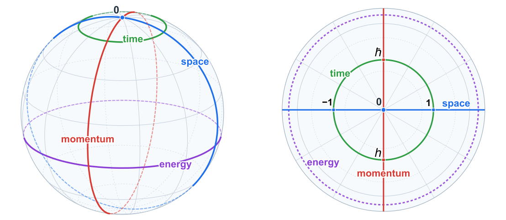

Every measurement ever taken, every proof ever written, every computation ever run was and ever will be finite. None of them was ever the last. This research programme presents and substantiates a simple argument: our Universe is finite. It is large, but comprehensible and complete, with nothing outside it, and every observation is a part that can never exhaust the whole. The programme rebuilds mathematics, physics and cosmology over a finite arithmetic substrate that is an exact and literal realisation of the established holographic principle. The framework keeps a public ledger of every claim it makes, and attaches an executable test to every proved statement. It makes the empirical validation, formulation of falsifiable predictions, and quantitative explanation of existing measurements into its core objective.
The holographic principle, taken literally
Physics has been quietly finite for a long time. Every infinity a physical theory ever produced was treated as a defect and removed, and the removal was always a finite scale: the infinitely bright night sky, the infinite self-energy of the electron, the vacuum energy that came out 120 orders of magnitude too large. Nature has never handed anyone an infinity.
The positive form of this is the one result about which modern physics, uncertain about almost everything deep, is in rare agreement, and it was forced by black holes. In the 1970s Bekenstein and Hawking found that a black hole carries entropy, information content, proportional not to its volume but to the area of its horizon. In the 1990s 't Hooft and Susskind promoted the strangeness to a principle: the physics inside any region is fully written on that region's surface, like a three-dimensional scene stored in a two-dimensional hologram, and the surface can hold only finitely much, a fixed capacity per patch. Nearly every road to quantum gravity accepts this and treats it as a boundary condition, a constraint that continuum theories must respect from the outside.
The argument for taking it literally is short. A black hole's surface keeps count of what its interior can hold, and the count grades with size: a bigger horizon holds more, a black hole the mass of the Sun can be in vastly more distinct states than one the mass of a mountain. And the count is not what the surface happens to hold but the most a surface of that size can register. Capacity, not inventory. Now suppose the writing on the surface were continuous, infinitely fine, like the real number line. Then every surface would hold the same amount: infinity. A continuum is size-blind; there are exactly as many points in a millimetre as in a galaxy. A continuous encoding cannot hold more here and less there, so it cannot be the thing the formula counts. The count is real, and it grades, so the encoding is finite: every surface registers a definite number of distinguishable states, more for a large horizon, fewer for a small one, none of them infinite. Nothing escapes this, because nothing outranks a black hole: wrap a surface around any physical system and let it collapse, and since disorder can only grow, whatever the system was, it already fit within its surface's finite count. For ordinary matter this is no longer a conjecture but a theorem of quantum field theory.
Our own universe has a horizon in exactly the everyday sense, the farthest that seeing reaches from where you stand, a limit that surrounds you and moves with you. A horizon at a definite distance is the signature of curvature: on an endless flat plain it would sit at infinity; on the Earth it sits a few miles out, because the Earth is a sphere. Curvature carried the same everywhere is what closes a surface, finite without an edge, and the dimming of distant light that astronomers read in 1998 as an accelerating expansion is the distortion at that horizon. If the argument holds, finiteness is not an assumption added to physics. It is what the one principle everyone already accepts has been saying all along.
That is the sense in which this programme is the literal realisation of the holographic principle. It does not treat the principle as a bound imposed on a deeper continuum world; it takes the principle as the blueprint. The world is a finite structure whose interior is, by construction and not by conjecture, the decoding of its boundary: the entire state of a universe lives on one closed surface, and what any observer inside it perceives, space, time and the sky, is the decoding of that surface from where the observer stands. The cardinality of the physical world is the one number the programme imports, read from the de Sitter entropy of our horizon. Everything else is derived from the finite arithmetic that a complete world of that size must carry.
The horizon
The same horizon is where the opposite idea comes from. Stand in a field and look around. The ground runs flat to the horizon in every direction, and the natural thing to do is to extrapolate: flat, forever. That is how every early picture of the world was drawn, with the observer at the centre and what they could see extended without limit. Eratosthenes measured the curvature of the Earth twenty-two centuries ago, and the flat horizon still won for most of the time since, because a very large thing and an infinite thing look the same from where you stand.
Infinity is that extrapolation, made official. Wherever a map of the world reaches its edge, the mind paints a horizon and names it "infinity": the line that goes on forever, the space with no edge, the process that always has one more step. It is not something anyone has observed. It is the shadow cast by the limits of a finite observer, a signpost at the edge of the map mistaken for a feature of the land.
This is not relativism. Reality itself is the one absolute; there is nothing outside it. What is finite and relational is our access to it: the measurements we take, the symbols we use, the maps we draw. A map is a fine thing. The mistake is to read the map's edge as the world's edge, and to fill the space beyond it with an infinity.
The one habit
Ask where infinity has ever shown up. Not in a telescope: the sky ends at a horizon. Not in a laboratory: no instrument has ever returned "infinite" as a reading. Not in a proof: a proof is a finite string of symbols, checked one step at a time by a finite person or a finite machine. Not even in your own head. You are a finite system running on a finite energy budget, and you have never once needed an actual infinity to think a thought, though you may have been told that you did.
Infinity is a habit, not a finding. It entered mathematics as a convenience (the limit, the real line, the completed set of all numbers) and it stayed because everything after it was built on top of it. The programme's first claim is that the habit fails three separate tests, each on its own.
It does not cohere. The standard theory of the infinite cannot admit its own subject. Set theory speaks of the totality of all sets and then proves that this totality is not a set. It must, because allowing it produces a contradiction at once. The paradoxes of a century ago were not resolved; they were fenced off, and the fence is the admission. Consider Hilbert's hotel: a number that stays the same when you add one to it. Every count you have ever made obeys the rule that adding one changes the total. The infinite is called a number and then excused from the arithmetic that makes anything a number. That is what "incoherent" means here: not that someone has derived a contradiction inside the fenced theory, but that the notion is defined by a property nothing you could ever register possesses. Nor does the theory start from nothing, as it likes to say. Its first move, the number one defined as the set containing the empty set, is a creation story in two symbols and a brace: a medium in which an absence can be located, a formative act performed on it, and a new being declared. That is a metaphysical starting position, and an honest foundation states it as one.
It cannot be checked. Any evidence you could ever hold, an observation, a dataset, a proof, fits inside a large enough finite structure. So no body of evidence, however big, says "infinite". The only thing evidence can say is "larger than my present bound". Registering a distinction costs energy, the energy available to any observer is finite, and so the number of distinctions any observer will ever register is finite. There is no observer, real or possible, for whom infinity could be a datum.
It is not needed. Take the axiom of infinity out of set theory and every classical paradox goes with it: the hotel, the set of all sets, the sphere cut into pieces and reassembled into two, the race that never finishes. One axiom in, all of it in; one axiom out, all of it gone. And nothing that was ever actually used is lost, because nothing that was ever actually used was infinite. Limits, integrals, the real line: as executed, each one is a finite procedure. What the programme does is keep the procedures and drop the story about what they are procedures for.
Laws require limits
There is a fourth test, and it is the one physics cannot afford to fail. Douglas Adams imagined an Infinite Improbability Drive: a machine that works by letting any event, however absurd, happen somewhere, provided the universe is large enough. It is a joke, and it is also an exact description of an infinite universe taken seriously. If the world is infinite and the laws of physics give every deviation a non-zero probability, then every deviation happens somewhere, and keeps happening. There are regions where a fair coin comes up heads for the lifetime of an observer, where no measurement ever converges, where the laws never once show themselves. For an observer in such a region a law of nature is indistinguishable from noise, and nobody can check that they are not in such a region, because typicality needs a view of the whole ensemble and physics grants you one world. Whether the infinity is completed or merely approached makes no difference; the damage is done as soon as arbitrarily large deviations are allowed in principle.
In a finite world the opposite holds. Information is bounded, deviations compete for limited capacity, and a law is a structural necessity rather than an average over worlds no one can visit. Comprehension is possible because reality cannot mislead you arbitrarily often. Engineering already relies on this: super-resolution imaging, learning systems, every inference from a finite sample works only because the world is informationally finite. The fact that we understand anything at all is evidence against infinity as a property of the world.
Complete, therefore finite
Two older ideas say what kind of finite structure it has to be. Spinoza defined a thing as finite when it can be limited by another thing of the same nature, and called reality "infinite" because no such outside peer exists. Read in modern terms, that is not endlessness at all. It is completeness: a system closed under its own operations, which nothing of its kind can enlarge. Reality has no outside; in today's vocabulary, it is finite but complete. Two and a half centuries later Noether showed that the conservation laws of physics are not commands handed down from outside a system but consequences of its own symmetries. Energy is conserved because the laws do not change with time; momentum, because they do not change with place. Explanation moved inside. There is no external lawgiver, and there is no external registry from which the universe could be enumerated or foreseen.
The programme's premises are these two ideas, taken together and made exact. The universe exists; any attempt to deny it is itself something that exists. The totality is finite and complete: finite for the reasons above, complete because it has no outside (two totalities would just be parts of one), so there is nothing it could be incomplete with respect to. Every reading of it is a projection: you are a part of the whole, and a part cannot hold a complete description of the whole, so every description, measurement and experience is a projection onto something smaller than the totality. This is where Gödel's limits land in the finite setting: not on truth, but on a horizon, a boundary between the facts a bounded observer can resolve and the values only the whole fixes. The programme tags the second kind and never pretends a bounded observer can read them. And a structure that works is the thing itself: when a mathematical structure is expressive enough, predicts what is observed, and leaves no registered distinction unaccounted for, it is not a model standing at a distance from reality. It is the reality, because nothing reaches an unregistered reality behind it. Every physical identification the programme makes is stated this way, as a forced identification with a named test that would kill it.
The finite world
What arithmetic does a complete finite totality have? One with no proper closed sub-structure, which means every number can be added, subtracted, multiplied and divided by every other, and that is possible exactly when the number of positions is a prime. Picture a clock face with a prime number of positions. Counting wraps around: you can keep counting forever, the way you can keep walking on the surface of the Earth, and the surface under you stays finite. The clock has two faces. On one, each move shifts you one position over: that is space, and an observer standing at the origin is moved by it. On the other, each move scales the whole world around you while you stay put at zero: that is time. Space is addition, time is multiplication, and by Noether's own rule the two symmetries are what the conserved quantities are made of. The observer is inside the world it observes, with a horizon set by its own size.

The figure is the clock face drawn out. One prime field, read from the observer at the pole, has exactly four domains, and they come in two Fourier pairs: shifting along the space meridian is dual to shifting along momentum, and the drive that advances time is dual to energy. The horizon is the far pole; the equator is halfway to it. Nothing about this is a continuum approximation: the sphere has a prime number of positions along every great circle, and the four cardinal residues 0, ±1, ħ, h are particular positions on it, not constants read from an instrument. The quarter of the full turn, the same four that writes the cardinality as 4S + 1, is the entropy S itself, and the two faces of that count, the spatial one an area and the temporal one an age, are the two things a telescope can measure. That is how the programme reads the de Sitter entropy of our own horizon as the one number it imports.
The real numbers do not disappear. They become a chart: a map drawn on the finite territory, in which classical results are read but never done. Everything exact lives in the finite arithmetic; the continuum is how a bounded observer summarises what it cannot resolve, the way a flat map serves a walker on a round Earth. A map is not a defect of the ground.
None of this makes the world small or static. A complete system with no outside cannot be foreseen from outside, because there is no outside to foresee it from; structures form, interact and recombine, complexity grows, knowledge accumulates. A finite universe can be genuinely creative, and that is also what its freedom consists in: not exemption from cause, but the absence of any external vantage point from which it could be predicted.
What it buys
The test of a foundation is what it derives that others assume. Over the finite substrate, Newton's law comes out of a counting law for a conserved flux. Below a certain acceleration the same flux is read as an amplitude rather than a count, and that reading gives the flat rotation curves of galaxies and their acceleration scale, with no dark-matter particle and no fitted function, the scale fixed by the expansion rate alone. The complex numbers of quantum mechanics are forced by a symmetry condition on the prime. The gauge group of particle physics, the content of one generation of matter, and the count of three generations follow from the arithmetic of the same substrate. Several of these are sharp, falsifiable predictions, and the ledger lists the observation that would kill each one.
And the smallest such world can be run. An observer of 13 cells inside a totality of 233 is the least pair the rules allow; it has space, time, light, mass, gravity and a sky, and it runs in a tab of your browser. The laboratory page shows it, and the essay A universe in a tab of your browser walks through it without equations.
The literature it stands on
None of the ideas above is the programme's own; what is new is taking every one of them at its word at once. The record of where they come from is the honest map of the neighbourhood, and of where the programme parts company with it.
Black holes and the holographic principle. Bekenstein assigned a black hole an entropy proportional to the area of its horizon [1], Hawking's radiation fixed the coefficient and made the horizon a thermodynamic object [2], and Bekenstein's bound turned the observation into a limit on how much information any bounded region can hold [3]. 't Hooft [4] and Susskind [5] raised the limit to a principle, that the physics of a region is fully described by degrees of freedom on its boundary at no more than one per Planck area; Bousso made the bound covariant [6] and reviewed the whole development [7]. Maldacena's correspondence gave the principle its one exact realisation, a gravitational theory in an anti-de Sitter interior equal to a field theory on its boundary [8]; Ryu and Takayanagi read the boundary's entanglement entropy off the area of an interior surface [9], and Van Raamsdonk argued that the interior's connectedness is that entanglement [10]. In all of this the boundary is a bound placed on a continuum, and the exact case lives in a universe with the wrong sign of curvature. The programme keeps the principle and drops the continuum underneath it: the boundary count is the whole state, and the interior is its decoding.
The de Sitter horizon and a finite state space. Gibbons and Hawking showed that the cosmological horizon of an expanding universe carries an entropy and a temperature of its own [11]. Banks [12] and Bousso [13] drew the consequence that a universe with a positive cosmological constant has a finite-dimensional state space, its dimension set by that entropy, and Fischler and Susskind asked what holography means for cosmology at all [14]. The programme's single quantitative import, the cardinality 4S + 1 with S the de Sitter entropy, is this observation taken as the definition of the world rather than as a constraint on it.
Gravity as thermodynamics and as information. Jacobson derived Einstein's equation from the area law and the Clausius relation applied to local horizons [15]; Padmanabhan developed the thermodynamic reading of gravity at length [16]; Verlinde proposed gravity as an entropic force and, later, that the dark-matter phenomenology of galaxies is an entropic effect of the de Sitter horizon [17], [18]. On the observational side, Milgrom's acceleration scale [19] and the radial acceleration relation of McGaugh, Lelli and Schombert [20] are the facts any such account must reproduce, and Lineweaver and Patel's mass–radius chart of every kind of object between the Compton and Schwarzschild walls is the object-level frame the programme's metrology paper adopts [21]. The programme's derivation runs the other way from Verlinde's: the counting law comes first, Newton's law is its flux reading, and the acceleration scale is the horizon's drive rate, with no entropic postulate.
It from bit and the physics of information. Wheeler's "it from bit" is the programme's motto stated by someone else: every physical quantity derives its meaning from yes-or-no registrations by an observer-participator [22]. Landauer had already shown that erasing a bit costs energy, so that information is a physical quantity and not a bookkeeping device [23], [24]; Zeilinger proposed that an elementary system carries exactly one bit [25]; Lloyd computed the ultimate limits on computation set by energy and gravity and the total number of operations the universe can have performed [26], [27]. The digital tradition, from Zuse's computing space [28] through Feynman's simulation argument [29], Fredkin's digital philosophy [30], Wolfram's cellular automata [31] and 't Hooft's cellular-automaton interpretation of quantum mechanics [32], takes the world to be a discrete computation. The programme agrees that registration is finite and physical, and differs on the arithmetic: not bits on a lattice with an external clock, but one prime field whose observers carry their own clocks, and whose quantum mechanics is exact rather than emergent.
Discrete spacetime. Penrose's spin networks built space from combinatorial angular momentum [33]; the causal-set programme of Bombelli, Lee, Meyer and Sorkin takes spacetime to be a locally finite partial order [34], [35]; causal dynamical triangulations recover a four-dimensional world from a sum over discrete geometries [36]; Bialynicki-Birula wrote the Weyl, Dirac and Maxwell equations as unitary automata on a lattice [37]; Cortês and Smolin, and Unger and Smolin, argued for a universe of unique events in which time is real and the laws themselves are within it [38], [39]. Each of these is discrete; each is also infinite, or approximates a continuum in a limit. The programme's discreteness is of a different kind: a complete finite totality with no limit to take.
Quantum theory over finite fields. Wootters formulated finite-state quantum mechanics with a Wigner function on a finite phase space [40], and with Gibbons and Hoffman built that phase space on finite fields [41]; Vourdas reviewed quantum systems with a finite Hilbert space and their Galois-field structure [42]; Schumacher and Westmoreland's modal quantum theory [43] and the Galois-field quantum mechanics of Chang, Lewis, Minic and Takeuchi [44] replaced the complex amplitudes by finite-field ones and asked what survives; Lev proposed finite mathematics as the foundation of quantum theory outright [45], [46]; Carroll and Singh discretised quantum mechanics completely and finitely [47]. Spekkens's toy theory showed how much of quantum phenomenology follows from a restriction on what an observer can know [48], and Rovelli's relational quantum mechanics made every state a state relative to another system [49]. These are the programme's nearest neighbours. The difference is that the finite-field theories are studied as toy models of, or approximations to, the complex theory, whereas here the prime field is the substrate, the complex numbers are forced on it by one congruence, and the observer is a part of the field rather than a user of it.
Finitism in mathematics. Yessenin-Volpin's ultra-intuitionism refused the completed infinite and the unbounded iteration of the successor [50]; Zeilberger argued that real analysis is a degenerate case of discrete analysis [51]; Gisin argued that the mathematical language chosen for physics, real numbers with infinite information or intuitionistic numbers with finite, shapes what physics can say about time [52]. The programme's first paper is the reductio these authors point toward, carried through: the axiom of infinity removed, the paradoxes gone with it, nothing that was ever used lost.
References
- J. D. Bekenstein, Black holes and entropy, Phys. Rev. D 7, 2333 (1973).
- S. W. Hawking, Particle creation by black holes, Commun. Math. Phys. 43, 199 (1975).
- J. D. Bekenstein, Universal upper bound on the entropy-to-energy ratio for bounded systems, Phys. Rev. D 23, 287 (1981).
- G. 't Hooft, Dimensional reduction in quantum gravity, in Salamfestschrift (1993), arXiv:gr-qc/9310026.
- L. Susskind, The world as a hologram, J. Math. Phys. 36, 6377 (1995).
- R. Bousso, A covariant entropy conjecture, J. High Energy Phys. 1999(07), 004.
- R. Bousso, The holographic principle, Rev. Mod. Phys. 74, 825 (2002).
- J. Maldacena, The large N limit of superconformal field theories and supergravity, Adv. Theor. Math. Phys. 2, 231 (1998).
- S. Ryu and T. Takayanagi, Holographic derivation of entanglement entropy from AdS/CFT, Phys. Rev. Lett. 96, 181602 (2006).
- M. Van Raamsdonk, Building up spacetime with quantum entanglement, Gen. Relativ. Gravit. 42, 2323 (2010).
- G. W. Gibbons and S. W. Hawking, Cosmological event horizons, thermodynamics, and particle creation, Phys. Rev. D 15, 2738 (1977).
- T. Banks, Cosmological breaking of supersymmetry?, Int. J. Mod. Phys. A 16, 910 (2001).
- R. Bousso, Positive vacuum energy and the N-bound, J. High Energy Phys. 2000(11), 038.
- W. Fischler and L. Susskind, Holography and cosmology, arXiv:hep-th/9806039 (1998).
- T. Jacobson, Thermodynamics of spacetime: the Einstein equation of state, Phys. Rev. Lett. 75, 1260 (1995).
- T. Padmanabhan, Thermodynamical aspects of gravity: new insights, Rep. Prog. Phys. 73, 046901 (2010).
- E. Verlinde, On the origin of gravity and the laws of Newton, J. High Energy Phys. 2011(04), 029.
- E. Verlinde, Emergent gravity and the dark universe, SciPost Phys. 2, 016 (2017).
- M. Milgrom, A modification of the Newtonian dynamics as a possible alternative to the hidden mass hypothesis, Astrophys. J. 270, 365 (1983).
- S. S. McGaugh, F. Lelli and J. M. Schombert, Radial acceleration relation in rotationally supported galaxies, Phys. Rev. Lett. 117, 201101 (2016).
- C. H. Lineweaver and V. M. Patel, All objects and some questions, Am. J. Phys. 91, 819 (2023).
- J. A. Wheeler, Information, physics, quantum: the search for links, in W. H. Zurek (ed.), Complexity, Entropy, and the Physics of Information, Addison-Wesley (1990).
- R. Landauer, Irreversibility and heat generation in the computing process, IBM J. Res. Dev. 5, 183 (1961).
- R. Landauer, Information is physical, Physics Today 44(5), 23 (1991).
- A. Zeilinger, A foundational principle for quantum mechanics, Found. Phys. 29, 631 (1999).
- S. Lloyd, Ultimate physical limits to computation, Nature 406, 1047 (2000).
- S. Lloyd, Computational capacity of the universe, Phys. Rev. Lett. 88, 237901 (2002).
- K. Zuse, Rechnender Raum, Vieweg, Braunschweig (1969); English translation Calculating Space, MIT Technical Translation AZT-70-164-GEMIT (1970).
- R. P. Feynman, Simulating physics with computers, Int. J. Theor. Phys. 21, 467 (1982).
- E. Fredkin, An introduction to digital philosophy, Int. J. Theor. Phys. 42, 189 (2003).
- S. Wolfram, A New Kind of Science, Wolfram Media (2002).
- G. 't Hooft, The Cellular Automaton Interpretation of Quantum Mechanics, Springer (2016).
- R. Penrose, Angular momentum: an approach to combinatorial space-time, in T. Bastin (ed.), Quantum Theory and Beyond, Cambridge University Press (1971).
- L. Bombelli, J. Lee, D. Meyer and R. D. Sorkin, Space-time as a causal set, Phys. Rev. Lett. 59, 521 (1987).
- S. Surya, The causal set approach to quantum gravity, Living Rev. Relativ. 22, 5 (2019).
- J. Ambjørn, J. Jurkiewicz and R. Loll, Emergence of a 4D world from causal quantum gravity, Phys. Rev. Lett. 93, 131301 (2004).
- I. Bialynicki-Birula, Weyl, Dirac, and Maxwell equations on a lattice as unitary cellular automata, Phys. Rev. D 49, 6920 (1994).
- M. Cortês and L. Smolin, The universe as a process of unique events, Phys. Rev. D 90, 084007 (2014).
- R. M. Unger and L. Smolin, The Singular Universe and the Reality of Time, Cambridge University Press (2014).
- W. K. Wootters, A Wigner-function formulation of finite-state quantum mechanics, Ann. Phys. 176, 1 (1987).
- K. S. Gibbons, M. J. Hoffman and W. K. Wootters, Discrete phase space based on finite fields, Phys. Rev. A 70, 062101 (2004).
- A. Vourdas, Quantum systems with finite Hilbert space: Galois fields in quantum mechanics, J. Phys. A 40, R285 (2007).
- B. Schumacher and M. D. Westmoreland, Modal quantum theory, Found. Phys. 42, 918 (2012).
- L. N. Chang, Z. Lewis, D. Minic and T. Takeuchi, Galois field quantum mechanics, Mod. Phys. Lett. B 27, 1350064 (2013).
- F. M. Lev, Introduction to a quantum theory over a Galois field, Symmetry 2, 1810 (2010).
- F. M. Lev, Finite Mathematics as the Foundation of Classical Mathematics and Quantum Theory, Springer (2020).
- S. M. Carroll and A. Singh, Completely discretized, finite quantum mechanics, Found. Phys. 53, 90 (2023).
- R. W. Spekkens, Evidence for the epistemic view of quantum states: a toy theory, Phys. Rev. A 75, 032110 (2007).
- C. Rovelli, Relational quantum mechanics, Int. J. Theor. Phys. 35, 1637 (1996).
- A. S. Yessenin-Volpin, The ultra-intuitionistic criticism and the antitraditional program for foundations of mathematics, in Intuitionism and Proof Theory, Studies in Logic 60, North-Holland (1970).
- D. Zeilberger, "Real" analysis is a degenerate case of discrete analysis, in B. Aulbach, S. Elaydi and G. Ladas (eds), New Progress in Difference Equations (Proceedings of ICDEA 2001), Taylor & Francis (2004).
- N. Gisin, Mathematical languages shape our understanding of time in physics, Nature Physics 16, 114 (2020).
How this site is organised
The Ledger is the programme's public account of itself. Every claim is a row with a status tag: imported from established results, realised as a forced physical identification, derived within the programme, a prediction with its falsifier, open, or Ω-hard, a value that no bounded observer can read, marked as such rather than guessed. Each paper carries its own ledger in the same format, and where a claim admits a finite check, the row names the script that performs it. Those scripts are collected in validation packages that run in the browser, so a reader can re-execute a paper's claims without installing anything. The Publications tab lists the papers, the preprints and the essays, each linked to its ledger and its package. The Predictions tab collects every falsifiable prediction of the corpus in one ledger, each with its falsifier, its witness and the paper it comes from; the Explicability tab collects what the construction explains that the standard account postulates or fits, the explicability dividends, in the same form.
Where to start
The essays are the gentlest way in: From Absolute Infinity to Relational Finitude on the long retreat of the infinite from cosmology, physics and society; Zero to One on the creation story hidden inside the definition of the number one; The Pursuit of Completeness on Spinoza, Noether and the finite universe. For the argument in full, Existence, Complexity and Truth in a Finite Universe, and for the paradoxes of infinity treated as a single reductio, Paradoxes of Infinity as Reductio ad Absurdum. For the smallest world, the (13, 233) laboratory. For the physics, the ledgers of gravitation as phase synchronisation and the dark sector. Then go look.